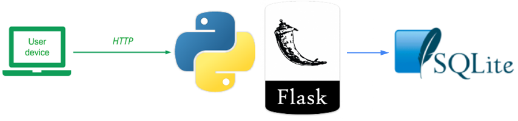

The previous version of the Guestbook stores the model data in memory using a Python list. Unfortunately, this data is lost when the server is terminated. In this version, we create a second Model using a sqlite3 backend. sqlite3 implements a simple file-based database that supports standard SQL querying. This version also modularizes the Model code into its own package as well as shifts the application to an MVP architecture. To view the code, change into its directory within the repository.
cd guestbook-src/02_mvp_modules_sqlite3
The directory structure is shown below. It contains two views and their associated presenters (index.{py,html} and sign.{py,html}). In addition, it contains the directory gbmodel which implements a package containing the database backend code including the abstract base (model.py), the Python list implementation (model_pylist.py), the sqlite3 implementation (model_sqlite3.py) and an initialization file for the package (__init__.py)
02_mvp_modules_sqlite3
├── app.py
├── gbmodel
│ ├── __init__.py
│ ├── model.py
│ ├── model_pylist.py
│ └── model_sqlite3.py
├── index.py
├── requirements.txt
├── sign.py
├── static
│ └── style.css
└── templates
├── index.html
├── layout.html
└── sign.html
Python supports creating your own packages to encourage code modularity. A package can be created by creating a directory and specifying a single, specially named file __init__.py that serves as the constructor for the package when it is imported by other Python code. For the gbmodel package, the constructor simply sets which model backend is going to be used for the site, in this case Python's built-in sqlite3 database. The constructor also instantiates the model from and implements the get_model() function to return it to the web application.
model_backend = 'sqlite3'
# model_backend = 'pylist'
if model_backend == 'sqlite3':
from .model_sqlite3 import ModelSqlite as model
elif model_backend == 'pylist':
from .model_pylist import ModelPylist as model
else:
raise ValueError("No appropriate databackend configured. ")
appmodel = model()
def get_model():
return appmodelAs the package constructor shows, we have implemented a new sqlite3 backend. The code for the backend is in model_sqlite3.py. The part that implements the DDL (Data Definition Language) is shown below. As the code shows, the abstract base class Model is first imported along with the sqlite3 package. Then, the file storing the database (guestbook.db) is specified. This file will be created in the directory that the web application is run from and will persist across invocations. The model constructor then creates a connection to the file and attempts a query to see if the entries table exists in the file. Upon receiving an error (which will be thrown if the table does not exist), it performs the SQL statement that creates the initial entries table along with its schema.
from .model import Model
from datetime import datetime
import sqlite3
DB_FILE = 'guestbook.db' # file for our Database
class ModelSqlite(Model):
def __init__(self):
# Make sure our database exists
connection = sqlite3.connect(DB_FILE)
cursor = connection.cursor()
try:
cursor.execute("SELECT count(rowid) FROM entries")
except sqlite3.OperationalError:
cursor.execute("create table entries (name text, email text, signed_on timestamp, message text)")
cursor.close()The rest of the code in model_sqlite3.py implements the DML (Data Manipulation Language) part of the backend. As the code shows, the select() method simply returns all rows from the entries table as a list of lists. We have to add a detect_types argument to the connection for the timestamp to be converted back to a datetime object, otherwise it would be a str.
The insert() method takes the (name, email, message) strings, then generates a timestamp (datetime.now()) before inserting them all into the entries table.
def select(self):
connection = sqlite3.connect(DB_FILE, detect_types=sqlite3.PARSE_DECLTYPES)
cursor = connection.cursor()
cursor.execute("SELECT * FROM entries")
return cursor.fetchall()
def insert(self, name, email, message):
params = {'name':name, 'email':email, 'datetime':datetime.now(), 'message':message}
connection = sqlite3.connect(DB_FILE)
cursor = connection.cursor()
cursor.execute("INSERT INTO entries (name, email, signed_on, message) VALUES (:name, :email, :datetime, :message)", params)
connection.commit()
cursor.close()
return TrueIn an MVP architecture, the controller code is split into individual "presenters" with each presenter bound to a view that it implements. In this case, there are two main parts of the code, that for rendering the guestbook and its entries (index.py and index.html) and that for inserting new guestbook entries (sign.py and sign.html). The implementation also leverages Flask's "MethodView", a common design pattern in which code is defined based on the HTTP request method being used (e.g. GET, POST, HEAD, PUT, etc.). The code below shows the changes to app.py to implement this architecture. As the code shows, two presenter classes are imported (Index and Sign) and routes that are bound to the MethodViews within them are defined (e.g. accessing '/' with a GET method goes to Index while accessing '/sign/' with either a GET or a POST goes to Sign.
import flask
from flask.views import MethodView
from index import Index
from sign import Sign
app = flask.Flask(__name__) # our Flask app
app.add_url_rule('/',
view_func=Index.as_view('index'),
methods=["GET"])
app.add_url_rule('/sign/',
view_func=Sign.as_view('sign'),
methods=['GET', 'POST'])To see how the presenter is implemented, the code below shows the code in sign.py which implements the Sign presenter as a subclass of Flask's MethodView. As the code shows, the class implements both the GET and POST methods for the Sign presenter. The GET method simply sends the user to the HTML form in sign.html while the POST method handles the submission of the HTML form in sign.html, pulling out its parameters and then calling model.insert() to place them into the backend. The code then redirects the browser to the index route upon completion.
from flask import redirect, request, url_for, render_template
from flask.views import MethodView
import gbmodel
class Sign(MethodView):
def get(self):
return render_template('sign.html')
def post(self):
"""
Accepts POST requests, and processes the form;
Redirect to index when completed.
"""
model = gbmodel.get_model()
model.insert(request.form['name'], request.form['email'], request.form['message'])
return redirect(url_for('index'))Log back into a linuxlab machine or your local Ubuntu VM that you are running the web application on. Change into the repository that contains the code.
cd guestbook-src/02_mvp_modules_sqlite3
As before, create a Python 3 virtual environment and install the packages specified in requirements.txt (e.g. flask)
python3 -m venv env source env/bin/activate pip install -r requirements.txt
Or on windows with PowerShell
python -m venv env .\env\Scripts\Activate.ps1 pip install -r requirements.txt
Then, start the server.
python app.py
Visit the site as before and add an entry that includes your e-mail address in it and the message "python/flask MVP sqlite3 #1". Then, type "Ctrl+c" to stop the server. Perform a directory listing to see that the sqlite3 database file guestbook.db has been created.
Start the server again. The original message should still appear as it has been read from the guestbook.db file. Add another entry using your e-mail address and the message "python/flask MVP sqlite3 #2".
Then, type "Ctrl+c" to stop the server again.
While our code directly creates and interacts with sqlite3 database, we can also use command line tools to do so similar to SQL-based CLIs for Postgres (pg) and MySQL (mysql).
In vscode you can access the database with many extensions.
This is a popular one:
If you are using your own local Ubuntu VM, you can install the CLI by running the command:
sudo apt-get install sqlite3 libsqlite3-dev
On windows you can install it with
winget install SQLite -e
Bring up the guestbook.db database within sqlite3 via the following command. (You must be in the correct folder):
sqlite3 guestbook.db
Then, within the sqlite client, perform the following commands and take a screenshot of their output to include in your lab notebook.
sqlite> .tables
sqlite> .schema <table_name>
sqlite> select * from <table_name>;
We therefore did not need ot add a primary key column.
You can see it with:
sqlite> SELECT rowid, * from <table_name>;
And also used it:
sqlite> UPDATE guestbook SET email = "test@test.com" WHERE rowid = 1;